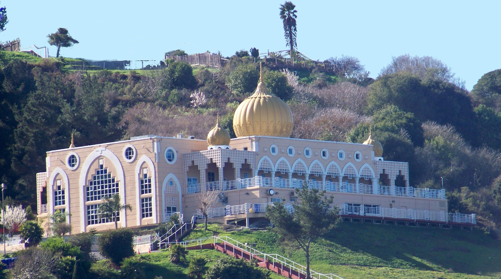
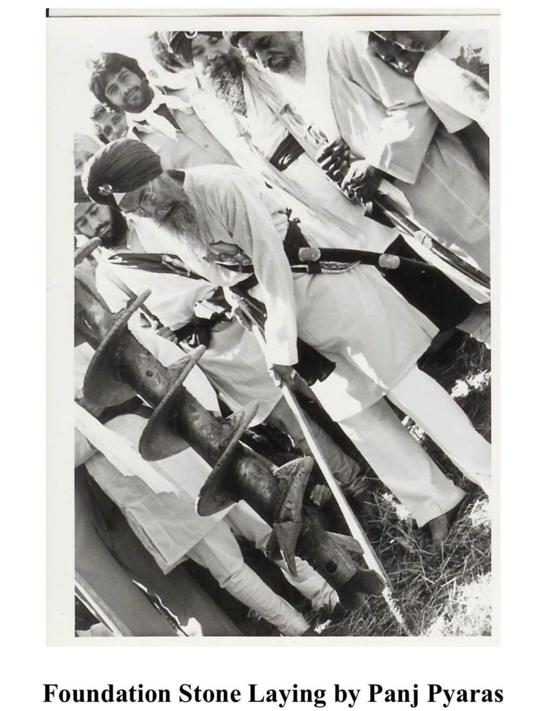
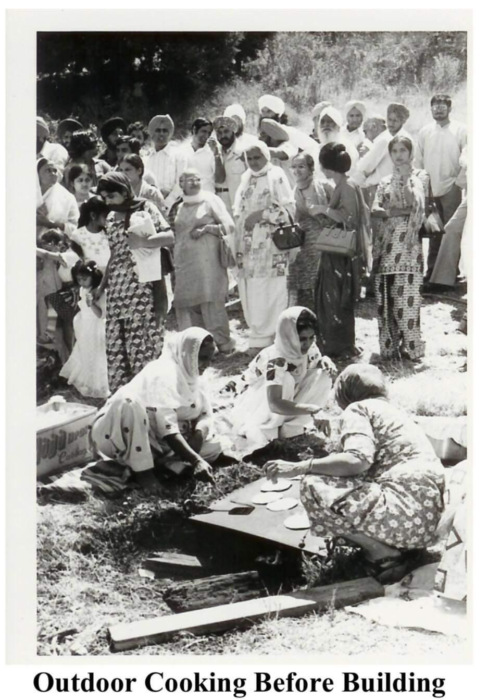
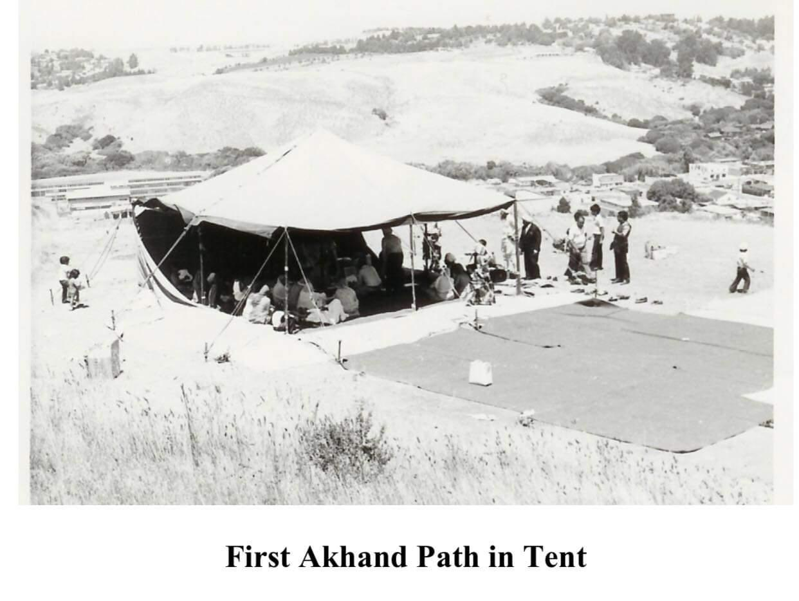
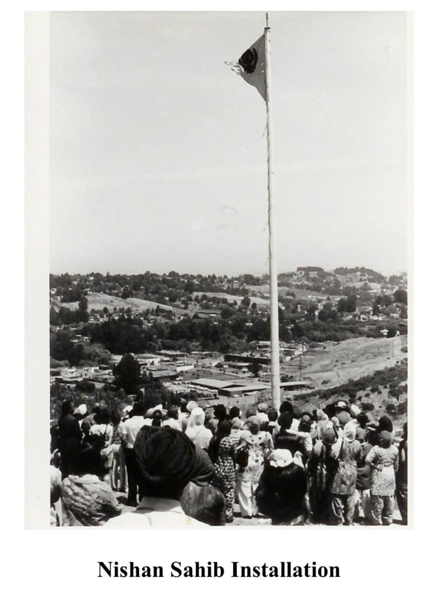
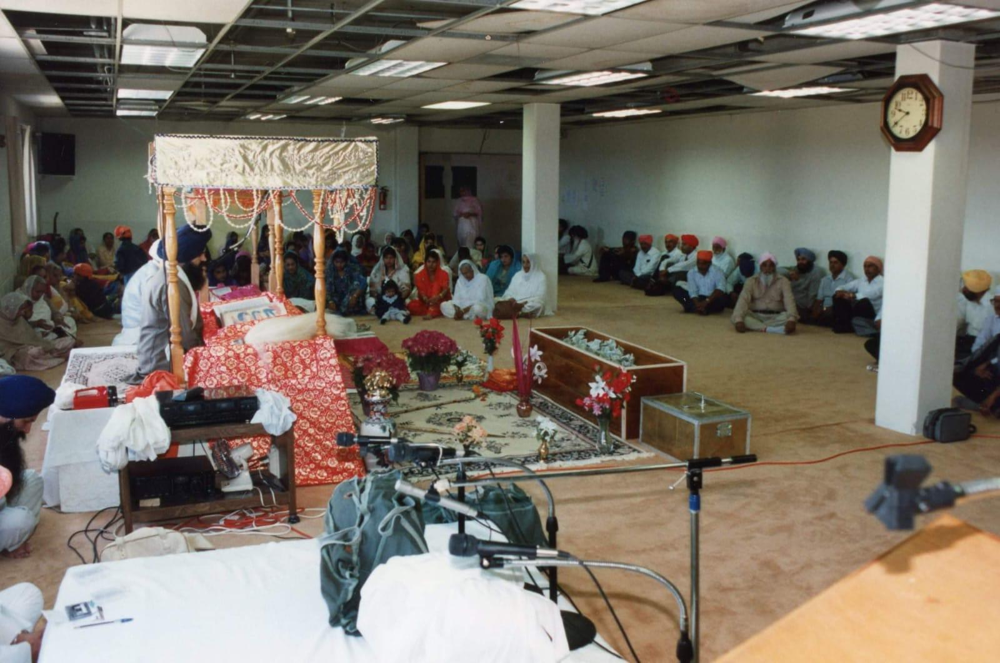
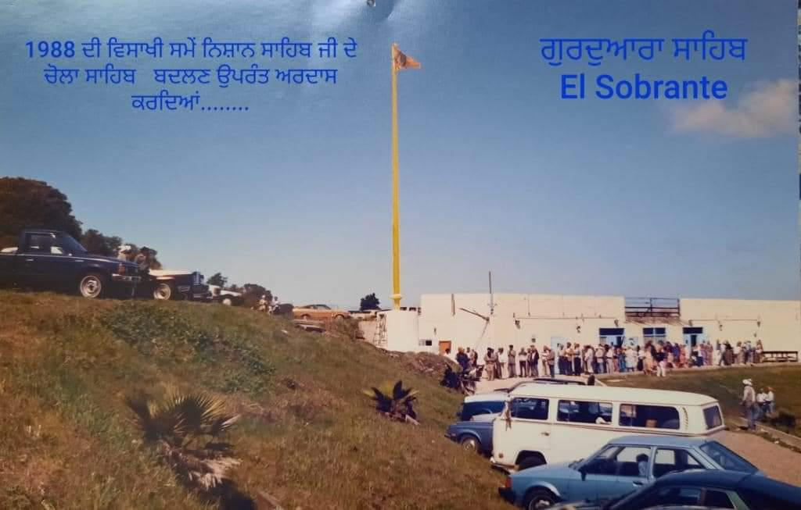

★ Special Event
Monthly Sukhmani Sahib Paath
Sunday, August 30
10:00 AM · Main Hall
Example entry so the committee can see how an event looks. Replace or delete this in the admin.

The Sikh Center of SF Bay Area — home of Gurdwara Sahib El Sobrante — has been serving the Bay Area Sikh community since its establishment in 1969. What began as informal gatherings in Berkeley grew into a formal organization with one purpose: to give the Bay Area's growing Sikh population a dedicated place of worship.
In 1976, approximately five acres of hillside in El Sobrante were purchased for the Gurdwara. The first building phase was completed in May 1979, and the current structure, with its golden domes and views over the El Sobrante valley and San Pablo Bay, was completed in June 1992.
Rooted in the teachings of Sri Guru Granth Sahib Ji, the Gurdwara is open to all regardless of faith or background. Langar — a free community meal — is served daily to every visitor.






Sunday, August 30
10:00 AM · Main Hall
Example entry so the committee can see how an event looks. Replace or delete this in the admin.
Friday, September 4 – September 6
Main Hall
Example entry — a multi-day event. Replace or delete in the admin.
Visit Us
Situated in the hills of El Sobrante, 25 miles north of San Francisco. Free parking available on-site. Open daily 5:00 AM – 8:30 PM.
Get Directions